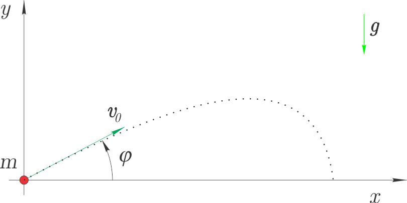
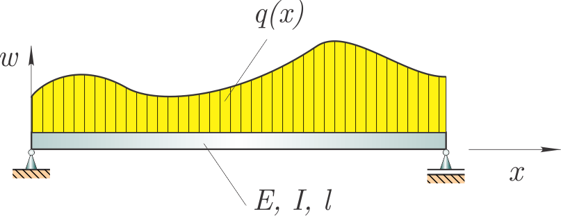

Numerično reševanje diferencialnih enačb - robni problem#
Reševanje dvotočkovnih robnih problemov#
Pod dvotočkovnim robnim problemom razumemo navadno diferencialno enačbo drugega reda oblike:
ob predpisanih robnih pogojih:
Metode, ki smo jih spoznali pri reševanju začetnih problemov, tukaj neposredno niso uporabne, ker nimamo podanega odvoda v začetni točki pri \(t=a\).
V nadaljevanju si bomo pogledali dva različna pristopa k reševanju robnih problemov:
t. i. strelska metoda,
metoda končnih razlik.
Strelska metoda#
Rešujemo robni problem:
ki ga prevedemo na začetni problem tako, da si izberemo:
Problem rešimo z numeričnimi metodami reševanja začetnega problema in rešitev označimo z \(\theta(u, t)\).
Robni problem rešimo, ko izberemo \(u\) tako, da velja:
Dobili smo nelinearno enačbo, ki jo moramo rešiti; za izračun vrednosti mejnih preostankov \(r(u)\) moramo numerično rešiti začetni problem.
Za rešitev enačbe \(r(u)=0\) lahko uporabimo sekantno metodo. Izberemo \(u_0\) in \(u_1\) in na \(i\)-tem koraku izračunamo:
Zaključimo, ko je:
Rešitev strelske metode je obremenjena z napako metode reševanja nelinearne enačbe \(\epsilon\) in z napako numerične metode za reševanje začetnega problema.
Numerični zgled: poševni met#
Na sliki je prikazan izstrelek mase \(m\), ki ga izstrelimo s hitrostjo \(\textbf{v}_0\). 
Velikost sile upora zraka je \(|\textbf{F}|=c\,|\textbf{v}|^2\), potem sta gibalni enačbi:
Komponente sile so (glejte izpeljavo pri poglavju iz reševanja začetnega problema sistema diferencialnih enačb):
Vertikalni met#
Najprej predpostavimo, da je \(\varphi=90\)° in torej v \(x\) smeri nimamo gibanja. Zanima nas rešitev, ko izstrelek izstrelimo iz višine \(y=0\) m in mora pri času \(t=b=1\) s biti na višini \(y(b)=10\) m. Definirali smo robni problem:
Najprej moramo enačbo drugega reda:
preoblikovati na sistem dveh enačb prvega reda. Uporabimo \(y_i=y^{i}\) ter upoštevamo \(F_y=-c\,y'\,\sqrt{y'^2}\).
Odvajamo \(y_i'=y_{i+1}\) in pripravimo sistem enačb prvega reda:
Uvozimo modula numpy in scipy.integrate.solve_ivp:
import numpy as np
from scipy.integrate import solve_ivp
Pripravimo seznam funkcij desnih strani:
def f_vert(t, y, g=9.81, m=1., c=0.5):
return np.array([y[1], -g-c*y[1]*np.sqrt(y[1]**2)/m])
ter pripravimo funkcijo za izračun mejnega preostanka pri času \(b\) v odvisnosti od začetne hitrosti \(v_0\) (privzeti zračni upor je \(c=0.1\)):
def r(v0=100., t=None, ciljna_lega=10., g=9.81, m=1., c=0.1):
def f_vert_tmp(t, y): # pripravimo funkcijo z željenimi parametri
return f_vert(t, y, g=g, m=m, c=c)
sol = solve_ivp(f_vert_tmp, t_span=(t[0], t[-1]), y0=np.array([0., v0]))
r = sol.y[0,-1] - ciljna_lega
return r
Preverimo mejni preostanek pri začetnem pogoju \(v_0=y'=50\) m/s:
t = np.linspace(0, 1, 100)
r(v0=50., t=t)
np.float64(5.63455093999735)
Opazimo, da je masa pri 1 sekundi 5,635 m nad ciljno višino.
Naš cilj je, da pri 1 sekundi masa doseže lego 10 m z natančnostjo 1e-6:
ciljna_lega = 10
epsilon = 1e-6
Izvedimo sedaj sekantno metodo:
x0 = 100
x1 = 50
for i in range(10):
f0 = r(v0=x0, t=t, ciljna_lega=ciljna_lega)
f1 = r(v0=x1, t=t, ciljna_lega=ciljna_lega)
x2 = x1 - f1 * (x1 - x0)/(f1 - f0)
err = r(v0=x2, t=t, ciljna_lega=ciljna_lega)
print(f'Novi približek je v0={x2}, napaka je {err}.')
x0 = x1
x1 = x2
if abs(err)<epsilon:
rešitev = x2
print(f'Rešitev v0={rešitev}')
break
Novi približek je v0=5.644178759347113, napaka je -9.672536331804414.
Novi približek je v0=33.67258709458857, napaka je 2.2187017725280302.
Novi približek je v0=28.442965190719487, napaka je 0.8225839451367332.
Novi približek je v0=25.361704474139284, napaka je -0.10153714557803362.
Novi približek je v0=25.70025579721459, napaka je 0.004276366407131249.
Novi približek je v0=25.686573522825174, napaka je 2.16308919487318e-05.
Novi približek je v0=25.686503962731987, napaka je -4.623860405672531e-09.
Rešitev v0=25.686503962731987
Poglejmo si sedaj izračunano rešitev:
sol = solve_ivp(lambda t, y: f_vert(t, y, c=0.1),
t_span=(t[0], t[-1]), y0=np.array([0., rešitev]),
t_eval=t
)
Zgoraj smo uporabili lambda izraz (dokumentacija). Izraz lambda t, y: f_vert(t, y, c=0.1) je ekvivalenten:
def ime_funkcije(t, y):
return f_vert(t, y, c=0.1)
Uvozimo matplotlib:
import matplotlib.pyplot as plt
%matplotlib inline
Prikažemo rezultat:
plt.title('Vertikalni met')
plt.hlines(ciljna_lega,0., 1, 'C3', linestyles='dashed', label='Ciljna lega', alpha=0.5)
plt.plot(sol.t, sol.y[0], label='Lega $y$')
plt.xlabel('$t$ [s]')
plt.legend(loc=4)
plt.show()
Poševni met#
Poglejmo si sedaj splošen poševni met (diferencialne enačbe so definirana že zgoraj). Najprej moramo sistem diferencialnih enačb drugega reda preoblikovati v sistem enačb prvega reda.
Uporabimo:
in dobimo sistem diferencialnih enačb prvega reda:
Pripravimo seznam funkcij desnih strani:
def f_poševno(t, y, g=9.81, m=1., c=0.1):
x, vx, yy, vy = y
return np.array([vx, -c*vx*np.sqrt(vx**2+vy**2)/m, vy, -g-c*vy*np.sqrt(vx**2+vy**2)/m])
Pripravimo še funkcijo za izračun mejnega preostanka pri času \(b=1\) v odvisnosti od vektorja začetne hitrosti \(\mathbf{v}_0\):
def r_poševno(v0=[5., 100.], t=None, ciljna_lega=np.array([10, 5.]), g=9.81, m=1., c=0.1):
sol = solve_ivp(lambda t, y: f_poševno(t, y, g=g, m=m, c=c),
t_span=(t[0], t[-1]),
y0=[0, v0[0], 0, v0[1]])
r = sol.y[0:3:2, -1] - ciljna_lega
return r
Preverimo mejni preostanek pri začetnem pogoju \(\mathbf{v}_0=[100., 100.]\) m/s:
r_poševno(v0=[100., 100.],t=t)
array([ 9.66195325, 11.84726075])
Za iskanje korena sistema nelinearnih funkcij smo že spoznali funkcijo scipy.optimize.root (dokumentacija):
root(fun, x0, args=(), method='hybr', jac=None,
tol=None, callback=None, options=None)
Najprej jo uvozimo:
from scipy import optimize
Potem uporabimo z začetnim ugibanjem \(\mathbf{v}_0\):
rešitev = optimize.root(r_poševno, np.array([100., 100.]), args=(t))
Rešitev je:
rešitev
message: The solution converged.
success: True
status: 1
fun: [ 1.155e-13 -3.260e-13]
x: [ 1.938e+01 1.655e+01]
method: hybr
nfev: 19
fjac: [[-9.339e-01 3.575e-01]
[-3.575e-01 -9.339e-01]]
r: [-4.078e-01 2.409e-01 -3.754e-01]
qtf: [ 1.067e-09 -1.311e-09]
Atribut rešitev.x vsebuje vektor izračunanih rešitev ([19.37894314, 16.55482478]). Preverimo mejni preostanek pri izračunani rešitvi:
r_poševno(v0=rešitev.x, t=t)
array([ 1.15463195e-13, -3.25961480e-13])
Poglejmo si sedaj izračunano rešitev:
sol = solve_ivp(lambda t, y: f_poševno(t, y, g=9.81, m=1., c=.1),
t_span=(t[0], t[-1]),
y0=[0, rešitev.x[0], 0, rešitev.x[1]],
t_eval=t)
Prikažemo rezultat:
plt.title('Poševni met')
plt.hlines(10,0., 1, 'C3', linestyles='dashed', label='Ciljna lega za $x$', alpha=0.5)
plt.hlines(5,0., 1, 'C4', linestyles='dashed', label='Ciljna lega za $y$', alpha=0.5)
plt.plot(sol.t, sol.y[0], label='Lega $x$', color='C3')
plt.plot(sol.t, sol.y[2], label='Lega $y$', color='C4')
plt.xlabel('$t$ [s]')
plt.legend()
plt.show()
Uporaba scipy.integrate.solve_bvp#
Namesto scipy.integrate.solve_ivp in scipy.optimize lahko uporabimo vgrajeno funkcijo za reševanje robnih problemov scipy.integrate.solve_bvp (BVP - angl. Boundary Value Problem):
scipy.integrate.solve_bvp(fun, bc, x, y,
p=None, S=None, fun_jac=None, bc_jac=None,
tol=0.001, max_nodes=1000, verbose=0)
Pojasnilo vseh argumentov je v dokumentaciji, tukaj bomo izpostavili nekatere:
funje desna stran (func(t, y...)),bcje mejni preostanek:bc(y(a), y(b)) = 0xnumerično polje (dimenzija(m)) neodvisne spremenljivkex[0]=ainx[-1]=b,ynumerično polje (dimenzija(n, m)) začetnih vrednosti.
Rezultat klicanja solve_bvp je objekt z atributi (izbrani):
xvrednosti neodvisne spremenljivke pri katerih je izračunan rezultat,yrezultat,solrezultat v obliki kubičnega zlepka,successjeTrue, če je bila rešitev konvergirala.
Poglejmo primer:
from scipy.integrate import solve_bvp
Definirajmo neodvisno spremenljivko
t = np.linspace(0, 1, 15)
In mejni preostanek (želimo, da je pri času b lega \(x=10\) m in \(y=5\) m):
def mejni_preostanek(ya, yb):
return np.array([ya[0], ya[2], yb[0]-10, yb[2]-5])
Definirajmo še začetne vrednosti hitrosti (kot začetno ugibanje):
y0 = np.zeros((4, t.size))
y0[1] = 5 # hitrost v x smeri
y0[3] = 100 # hitrost v y smeri
y0[:,:3]
array([[ 0., 0., 0.],
[ 5., 5., 5.],
[ 0., 0., 0.],
[100., 100., 100.]])
In rešimo robni problem in opis rezultata
sol = solve_bvp(lambda t, y: f_poševno(t, y, g=9.81, m=1., c=.1),
bc=mejni_preostanek, x=t, y=y0)
sol
message: The algorithm converged to the desired accuracy.
success: True
status: 0
x: [ 0.000e+00 2.381e-02 ... 9.762e-01 1.000e+00]
sol: <scipy.interpolate._interpolate.PPoly object at 0x0000026164A93A70>
p: None
y: [[-1.588e-22 4.482e-01 ... 9.853e+00 1.000e+01]
[ 1.939e+01 1.828e+01 ... 6.210e+00 6.117e+00]
[-3.176e-22 3.801e-01 ... 5.031e+00 5.000e+00]
[ 1.656e+01 1.539e+01 ... -1.189e+00 -1.403e+00]]
yp: [[ 1.939e+01 1.828e+01 ... 6.210e+00 6.117e+00]
[-4.944e+01 -4.369e+01 ... -3.926e+00 -3.839e+00]
[ 1.656e+01 1.539e+01 ... -1.189e+00 -1.403e+00]
[-5.205e+01 -4.659e+01 ... -9.058e+00 -8.929e+00]]
rms_residuals: [ 4.302e-05 3.582e-05 ... 1.297e-06 4.151e-06]
niter: 2
Prikažimo rezultat:
plt.title('Poševni met')
plt.hlines(10,0., 1, 'C3', linestyles='dashed', label='Ciljna lega za $x$', alpha=0.5)
plt.hlines(5,0., 1, 'C4', linestyles='dashed', label='Ciljna lega za $y$', alpha=0.5)
plt.plot(sol.x, sol.y[0], label='Lega $x$', color='C3')
plt.plot(sol.x, sol.y[2], label='Lega $y$', color='C4')
plt.xlabel('$t$ [s]')
plt.legend()
plt.show()
Numerični zgled: nosilec z obremenitvijo#
Poglejmo si nosilec: 
Poves \(w(x)\) nosilca popiše diferencialna enačba četrtega reda:
Znane konstante so \(E,I,l\) in je \(q(x)\) porazdeljena obremenitev.
Robni pogoji (členkasto vpet nosilec):
Parametri so:
\(I=2.1\cdot10^{-5}\) m \(^4\),
\(E=2.1\cdot10^{11}\) N/m \(^2\),
\(l=10\) m.
Porazdeljena obremenitev \(q(x)\) bo definirana pozneje.
Najprej moramo diferencialno enačbo četrtega reda preoblikovati v sistem diferencialnih enačb prvega reda. Uporabimo:
in dobimo sistem diferencialnih enačb prvega reda:
Pripravimo različne porazdeljene obremenitve:
def q_konstanta(x, F_0=1e3, l=10):
return -F_0*np.ones_like(x)
def q_trikotna(x, F_0=1e3, l=10):
return -F_0*x/l
def q_pol_sinusna(x, F_0=1e3, l=10):
return -F_0*np.sin(np.pi*x/l)
Definirajmo dolžino (ostale parametre, \(I, E\), bomo uporabili privzete):
l = 10.
x = np.linspace(0, l, 15)
plt.fill_between(x, q_konstanta(x), alpha=0.4, label='Konstantna')
plt.fill_between(x, q_pol_sinusna(x), alpha=0.4, label='Pol-sinusna')
plt.fill_between(x, q_trikotna(x), alpha=0.4, label='Trikotna')
plt.title('Porazdeljena obremenitev $q(x)$')
plt.legend()
plt.show()
Pripravimo seznam funkcij desne strani:
def f_nosilec_konstanta(x, y, E=2.1e11, I=2.1e-5):
return np.array([y[1], y[2], y[3], q_konstanta(x)/(E*I)], dtype=float)
def f_nosilec_pol_sinusna(x, y, E=2.1e11, I=2.1e-5):
return np.array([y[1], y[2], y[3], q_pol_sinusna(x)/(E*I)])
def f_nosilec_trikotna(x, y, E=2.1e11, I=2.1e-5):
return np.array([y[1], y[2], y[3], q_trikotna(x)/(E*I)])
Definirajmo sedaj robne pogoje oz. mejni preostanek (poves in moment sta na robovih enaka nič):
def mejni_nosilec(ya, yb):
return np.array([ya[0], ya[2], yb[0], yb[2]])
Definirajmo še začetne vrednosti naklona (\(w'\) ) in strižne sile \(w'''\) ) (kot začetno ugibanje):
y0 = np.zeros((4, x.size), dtype=float)
# lahko tisti, ki niso znani ne bi bili nič:
# y0[1] = 1. # w'
# y0[3] = 1. # w'''
In rešimo robni problem (za vse tri tipe obremenitve):
sol_ko = solve_bvp(f_nosilec_konstanta, bc=mejni_nosilec, x=x, y=y0)
sol_pol_sin = solve_bvp(f_nosilec_pol_sinusna, bc=mejni_nosilec, x=x, y=y0)
sol_trikotna = solve_bvp(f_nosilec_trikotna, bc=mejni_nosilec, x=x, y=y0)
Rezultat prikažimo za konstantno obremenitev:
plt.fill_between(sol_ko.x, sol_ko.y[0], label='Poves $w$', alpha=0.5)
plt.fill_between(sol_ko.x, sol_ko.y[1], label='Naklon $w\'$', alpha=0.5)
plt.title('Konstantna obremenitev')
plt.legend()
plt.show()
In primerjavo povesa za različne tipe obremenitve:
plt.fill_between(sol_ko.x, sol_ko.y[0], label='Konstantna $w$', alpha=0.5)
plt.fill_between(sol_pol_sin.x, sol_pol_sin.y[0], label='Pol-sinusna $w$', alpha=0.5)
plt.fill_between(sol_trikotna.x, sol_trikotna.y[0], label='Trikotna $w$', alpha=0.5)
plt.title('Poves pri različnem tipu obremenitve')
plt.legend()
plt.show()
Metoda končnih razlik#
from IPython.display import YouTubeVideo
YouTubeVideo('YozKGsNYZ6Y', width=800, height=300)
Rešujemo robni problem:
Velja torej:
Pri metodi končnih razlik za reševanje robnega problema uporabimo diferenčno shemo. Predpostavimo, da imamo interval \([a,b]\), na katerem rešujemo diferencialno enačbo (neodvisna spremenljivka) razdeljeno na enake podintervale (točk je \(n\)):
Odvode nadomestimo s centralno diferenčno shemo:
Odvod \(\downarrow\) \(\backslash\) Vrednosti \(\rightarrow\) |
\(y_{i-2}\) |
\(y_{i-1}\) |
\(y_{i}\) |
\(y_{i+1}\) |
\(y_{i+2}\) |
|---|---|---|---|---|---|
\(y_i'=\frac{1}{h}\cdot\) |
0 |
-0.5 |
0 |
0.5 |
0 |
\(y_i''=\frac{1}{h^2}\cdot\) |
0 |
1 |
-2 |
1 |
0 |
\(y_i'''=\frac{1}{h^3}\cdot\) |
-0.5 |
1 |
0 |
-1 |
0.5 |
\(y_i^{(4)}=\frac{1}{h^4}\cdot\) |
1 |
-4 |
6 |
-4 |
1 |
Prikazana centralna diferenčna shema ima napako drugega reda \(\mathcal{O}(h^{2})\).
V \(i\)-ti točki navadno differencialno enačbo drugega reda s centralimi diferencami zapišemo:
Če zanemarimo napako metode:
Zgornjo enačbo lahko zapišemo za \(n-2\) notranjih točk, kar pomeni, da nam do rešljivega sistema enačb za \(n\) neznank manjkata še dve enačbi. Ti dve enačbi sta robna pogoja:
V primeru linearnega robnega problema moramo za izračun \(n\) neznank \(y_i\) rešiti sistem \(n\) linearnih enačb (če je pa nelinearen, pa sistem nelinearnih enačb).
Ocena napake#
Točen rezultat \(y(t_{i})\) pri velikosti koraka \(h\) je:
kjer je \(y_{i,h}\) numerični približek in \(E_h\) napaka metode. Ker je globalna napaka drugega reda, lahko napako zapišemo:
Podobno lahko za velikost koraka \(2h\) zapišemo:
kjer je \(y_{j,2h}\) numerični približek in \(E_{2h}\) napaka metode in je:
Ob predpostavki, da je konstanta \(k\) pri koraku \(h\) in koraku \(2h\) enaka, lahko določimo oceno napake pri boljšem približku \(E_h\). Najprej izenačimo točna rezultat \(y(t_{i})\) pri koraku \(h\) in rezultat \(y(t_{j})\) pri koraku \(2h\) (velja \(i=2\,j\), \(j=1,2,\dots\)):
sledi:
in nato izračunamo oceno napake:
Numerični zgled: vertikalni met#
Zgoraj smo vertikalni met rešili s strelsko metodo; uporabimo sedaj metodo končnih razlik. Najprej robni problem: $\(y''(t)=F_y/m-g,\qquad y(0)=0,\quad y(1)=10.\)\( zapisati s pomočjo centralne diferenčne sheme (\)F_y=-c,y‘$):
(Tukaj smo predpostavili, da je zračni upor linearno odvisen od hitrost. V nasprotnem primeru bi imeli nelinearni robni problem, in posledično razvili sistem nelinearnih enačb.)
Zgornji izraz preoblikujemo:
Robna pogoja sta:
Robni problem smo torej preoblikovali na sistem \(n\) linearnih enačb. Poglejmo si sedaj konkreten izračun za \(n=11\); najprej definirajmo konstante, časovni vektor t in korak h:
n = 11 # liho število
c = 0.5
m = 1.0
g = 9.81
t = np.linspace(0, 1, n)
h = t[1]
Nato nadaljujemo z izračunom tridiagonalne matrike koeficientov A.
Pomagamo si s funkcijo numpy.diag() (dokumentacija):
numpy.diag(v, k=0)
s parametroma:
vvektor, ki bo prirejen diagonali,kdiagonala, kateri se prirediv.k=0uporabimo za glavno diagonalo,k<0oz.k>0uporabimo za diagonale pod oz. nad glavno diagonalo.
A = np.diag(-4*np.ones(n), 0) + \
(2-c*h/m)*np.diag(np.ones(n-1), -1) + \
(2+c*h/m)*np.diag(np.ones(n-1), 1)
A[:4,:4]
array([[-4. , 2.05, 0. , 0. ],
[ 1.95, -4. , 2.05, 0. ],
[ 0. , 1.95, -4. , 2.05],
[ 0. , 0. , 1.95, -4. ]])
Definirajmo še vektor konstant:
b = -2*g*h**2 * np.ones(n)
Sedaj popravimo matriko koeficientov A in vektor konstant b, da zadostimo robnim pogojem:
A[0,0] = 1
A[0,1] = 0
A[-1,-2] = 0
A[-1,-1] = 1
b[0] = 0.
b[-1] = 10.
Rešimo sistem linearnih enačb:
y_mkr = np.linalg.solve(A, b)
Prikažemo rezultat:
plt.title(r'Vertikalni met (upor zraka: $-c\,\dot y$)')
plt.hlines(10, 0, 1, 'C3', label='Ciljna lega', linestyles='dashed', alpha=0.5)
plt.plot(t, y_mkr, '.', label='Metoda končnih razlik')
plt.xlabel('$t$ [s]')
plt.ylabel('$y$ [m]')
plt.legend()
plt.show()
S pomočjo funkcije numpy.gradient() izračunamo še hitrost in pospešek:
v_mkr = np.gradient(y_mkr,h, edge_order=2)
a_mkr = np.gradient(v_mkr,h, edge_order=2)
v_mkr[:4]
array([17.99109496, 16.20009044, 14.45276895, 12.79068266])
Izračunajmo sedaj še rezultat z dvojnim korakom:
n2h = n//2+1
t2h = np.linspace(0, 1, n2h)
h2h = t[1]
A2h = np.diag(-4*np.ones(n2h), 0) + \
(2-c*h2h/(m))*np.diag(np.ones(n2h-1), -1) + \
(2+c*h2h/(m))*np.diag(np.ones(n2h-1), 1)
b2h = -2*g*h2h**2 * np.ones(n2h)
A2h[0,0] = 1
A2h[0,1] = 0
A2h[-1,-1] = 1
A2h[-1,-2] = 0
b2h[0] = 0.
b2h[-1] = 10.
y2h_mkr = np.linalg.solve(A2h, b2h)
Primerjajmo prvih šest rezultatov pri koraku \(2h\):
y2h_mkr[:6]
array([ 0. , 2.40584652, 4.59862736, 6.58873597, 8.38605878,
10. ])
z vsakim drugim rezultatom pri koraku \(h\):
y_mkr[:12:2]
array([ 0. , 3.24001809, 5.79815462, 7.73931207, 9.12221538,
10. ])
Sedaj lahko ocenimo napako:
(y_mkr[::2]-y2h_mkr)/3
array([0. , 0.27805719, 0.39984242, 0.38352537, 0.24538553,
0. ])
Numerični zgled: nosilec z obremenitvijo#
Vrnimo se k robnemu problemu nosilca s polsinusno obremenitvijo (\(q(x)=-F_0\,\sin(\pi\,x/l))\)), ki smo ga že obravnavali s strelsko metodo.
Diferencialno enačbo četrtega reda zapišemo s pomočjo centralne diferenčne sheme (za \(i\)-to točko):
Robni pogoji so štirje, najprej poves na robovih:
Ker na robovih ni momenta, je drugi odvod nič. S centralno diferenčno shemo torej zapišemo dodatne enačbe:
Če za neodvisno spremenljivko \(x\) uporabimo \(n\) ekvidistantnih točk, potem diferencialno enačbo četrtega reda zapišemo za \(n-2\) notranje točke. S tem pridobimo dodatni nefizikalni točki \(w_{-1}\) in \(w_n\). Če dodamo še štiri robne pogoje, imamo rešljiv sistem linearnih enačb z \(n+2\) neznakami in \(n+2\) enačbami.
Najprej pripravimo podatke, neodvisno spremenljivko x in korak h:
l = 10.
E = 2.1e11
I = 2.1e-5
F_0= 1e3
n = 100
x = np.linspace(0, l, n)
h = x[1]
Nato pripravimo matriko koeficientov (matrika je dimenzije (n, n), v prvi in v zadnji dve vrstici bi lahko zapisali tudi vrednosti 0, to bomo pozneje popravili):
A = +1*np.diag(np.ones(n-2+2), -2) \
-4*np.diag(np.ones(n-1+2), -1) \
+6*np.diag(np.ones(n+2), 0) \
-4*np.diag(np.ones(n-1+2), +1) \
+1*np.diag(np.ones(n-2+2), +2)
A[:4,:4]
array([[ 6., -4., 1., 0.],
[-4., 6., -4., 1.],
[ 1., -4., 6., -4.],
[ 0., 1., -4., 6.]])
Definirajmo še vektor konstant (dodamo en element na koncu in en na začetku):
b = np.zeros(n+2)
b[2:-2] = - h**4 * F_0*np.sin(np.pi*x[1:-1]/l)/(E*I)
b[:4]
array([ 0.00000000e+00, 0.00000000e+00, -7.48966545e-10, -1.49717894e-09])
Sedaj popravimo matriko koeficientov A in vektor konstant b, da zadostimo
robnim pogojem.
Najprej \(w_0=w_{n-1}=0\):
A[0,:3]= np.array([0, 1, 0])
b[0] = 0
A[-1,-3:]= np.array([0, 1, 0])
b[-1] = 0
Nato \(w_{-1}-2\,w_{0}+w_{1}=0\) in \(w_{n-2}-2\,w_{n-1}+w_{n}=0\):
A[1,:4] = np.array([1, -2, 1,0])
b[1] = 0
A[-2,-4:] = np.array([0, 1, -2, 1])
b[-2] = 0
A[:5,:5]
array([[ 0., 1., 0., 0., 0.],
[ 1., -2., 1., 0., 0.],
[ 1., -4., 6., -4., 1.],
[ 0., 1., -4., 6., -4.],
[ 0., 0., 1., -4., 6.]])
A[-5:,-5:]
array([[ 6., -4., 1., 0., 0.],
[-4., 6., -4., 1., 0.],
[ 1., -4., 6., -4., 1.],
[ 0., 0., 1., -2., 1.],
[ 0., 0., 0., 1., 0.]])
b[:5]
array([ 0.00000000e+00, 0.00000000e+00, -7.48966545e-10, -1.49717894e-09,
-2.24388381e-09])
b[-5:]
array([-2.24388381e-09, -1.49717894e-09, -7.48966545e-10, 0.00000000e+00,
0.00000000e+00])
Rešimo sistem linearnih enačb:
y_mkr = np.linalg.solve(A, b)
Prikažemo rezultat:
plt.title('Poves ob polsinusni obremenitvi')
plt.plot(sol_pol_sin.x, sol_pol_sin.y[0], 'o', label='Strelska metoda')
plt.plot(x, y_mkr[1:-1], '.', label='Metoda končnih razlik')
plt.xlabel('$x$ [m]')
plt.ylabel('$w$ [m]')
plt.legend()
plt.show()
Dodatno: simbolna rešitev nosilca#
Tukaj si bomo pogledali simbolno reševanje robnega problema. Poudariti je treba, da gre tukaj zgolj za zgled, ki ga lahko naredimo za obravnavani nosilec z relativno enostavno polsinusno obremenitvijo. V praksi so seveda obremenitve in tudi oblike nosilca lahko bistveno bolj zahtevne in takrat druge poti kot numeričnega reševanja skoraj nimamo na voljo.
Najprej uvozimo sympy:
import sympy as sym
sym.init_printing()
Definirajmo spremenljivke:
w = sym.Function('w')
x, E, I, F_0, l = sym.symbols('x, E, I, F_0, l')
Definirajmo differencialno enačbo (robne pogoje dodamo pozneje):
eq = sym.Eq(-E*I*w(x).diff(x,4)-F_0*sym.sin(sym.pi*x/l),0)
eq
Rešimo:
sol = sym.dsolve(eq, func=w(x), hint='nth_linear_constant_coeff_undetermined_coefficients',
ics={
w(0):0, #poves pri x=0 je nič
w(x).diff(x,2).subs(x, 0): 0,#moment pri x=0 je nič
w(x).subs(x, l): 0, #poves pri x=l je nič
w(x).diff(x, 2).subs(x, l): 0 #moment pri x=l je nič
})
sol

podatki = {E: 2.1e11, I: 2.1e-5, l: 10, F_0:1e3}
resitev_np = sym.lambdify(x, sol.rhs.subs(podatki), modules='numpy')
x_ana = np.linspace(0, podatki[l], 100)
y_ana = resitev_np(x_ana)
plt.title('Upogib ob polsinusni obremenitvi')
plt.plot(x_ana, y_ana, '-', label='Analitična rešitev')
plt.xlabel('$x$ [m]')
plt.ylabel('$w$ [m]')
plt.legend()
plt.show()
Primerjajmo sedaj analitično rešitev, z rešitivijo z metodo končnih razlik in strelsko metodo:
[np.min(y_ana), np.min(y_mkr), np.min(sol_pol_sin.y[0])]